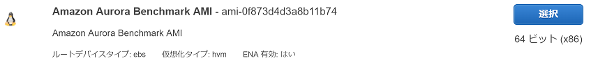

テンプレートはここで見れる
内容を抜粋
VPC、サブネット
## Create VPC
LabVpc:
Type: 'AWS::EC2::VPC'
Properties:
CidrBlock: 172.31.0.0/16
EnableDnsSupport: 'true'
EnableDnsHostnames: 'true'
InstanceTenancy: default
Tags:
- Key: Name
Value: !Join ['-', [!Ref 'AWS::StackName', Aurora Lab VPC]]
## Create Public Subnets
PublicSubnet01:
Type: 'AWS::EC2::Subnet'
Properties:
VpcId: !Ref LabVpc
MapPublicIpOnLaunch: 'true'
CidrBlock: 172.31.0.0/24
AvailabilityZone: !Sub ${AWS::Region}a
Tags:
- Key: Name
Value: !Join ['-', [!Ref 'AWS::StackName', Aurora Lab Subnet 1 - Public]]
## Create Private Subnets
PrivateSubnet01:
Type: 'AWS::EC2::Subnet'
Properties:
VpcId: !Ref LabVpc
MapPublicIpOnLaunch: 'false'
CidrBlock: 172.31.24.0/24
AvailabilityZone: !Sub ${AWS::Region}a
Tags:
- Key: Name
Value: !Join ['-', [!Ref 'AWS::StackName', Aurora Lab Subnet 4 - Private]]
EC2インスタンス
## Create the bastion host
BastionHost:
Type: 'AWS::EC2::Instance'
Properties:
SubnetId: !Ref PublicSubnet01
InstanceType: c5.18xlarge
Monitoring: True
SecurityGroupIds: [!Ref SshSecurityGroup]
KeyName: !Ref KeyName
Tags:
- Key: Name
Value: !Join ['-', [!Ref 'AWS::StackName', Bastion Host]]
ImageId: !Ref BastionAmi
IamInstanceProfile: !Ref RootInstanceProfile
Auroraクラスター
AuroraDestinationDBCluster:
Type: 'AWS::RDS::DBCluster'
Properties:
DatabaseName: sysbench
DBClusterIdentifier: !Sub '${AWS::StackName}'
DBClusterParameterGroupName: !Ref AuroraClusterParameterGroup
DBSubnetGroupName: !Ref AuroraDbSubnetGroup
Engine: !If [Is57, aurora-mysql, aurora ]
EngineVersion: !If [Is57, 5.7.mysql_aurora.2.04.1, 5.6.mysql_aurora.1.19.0 ]
MasterUsername: masteruser
MasterUserPassword: Password1
VpcSecurityGroupIds: [!GetAtt MySqlSecurityGroup.GroupId]
DependsOn: MySqlSecurityGroup
DeletionPolicy: "Delete"
## Create First Aurora Instance
AuroraInstance01:
Type: 'AWS::RDS::DBInstance'
Properties:
AvailabilityZone: 'us-east-1a'
DBClusterIdentifier: !Ref AuroraDestinationDBCluster
DBInstanceClass: db.r4.16xlarge
DBInstanceIdentifier: !Join ['-', [!Ref 'AWS::StackName', 'Instance01']]
DBParameterGroupName: !Ref AuroraInstanceParameterGroup
DBSubnetGroupName: !Ref AuroraDbSubnetGroup
#EnablePerformanceInsights: 'true'
EnablePerformanceInsights: !If [Is57, 'false', 'true' ]
Engine: !If [Is57, aurora-mysql, aurora ]
EngineVersion: !If [Is57, 5.7.mysql_aurora.2.04.1, 5.6.mysql_aurora.1.19.0 ]
LicenseModel: general-public-license
PubliclyAccessible: 'false'
AuroraClusterParameterGroup:
Type: AWS::RDS::DBClusterParameterGroup
Properties:
Description: !Join ['-', [!Ref 'AWS::StackName', 'Cluster Parameter Group']]
Family: !If [Is57, aurora-mysql5.7, aurora5.6 ]
Parameters:
innodb_flush_log_at_trx_commit: 0
innodb_sync_array_size: 1024
max_connections: 16000
max_user_connections: 16000
table_definition_cache: 524288
table_open_cache: 524288
table_open_cache_instances: 64
AuroraInstanceParameterGroup:
Type: AWS::RDS::DBParameterGroup
Properties:
Description: !Join ['-', [!Ref 'AWS::StackName', 'Instance Parameter Group']]
Family: !If [Is57, aurora-mysql5.7, aurora5.6 ]
拡張ネットワーキングをサポートするインスタンスタイプでAmazon Linux 2または最新バージョンの Amazon Linux AMIで起動した場合は既に有効になっている

BastionAmi:
Description: 'The AMI used to create the bastion host'
Type: 'String'
Default: 'ami-0f873d4d3a8b11b74'